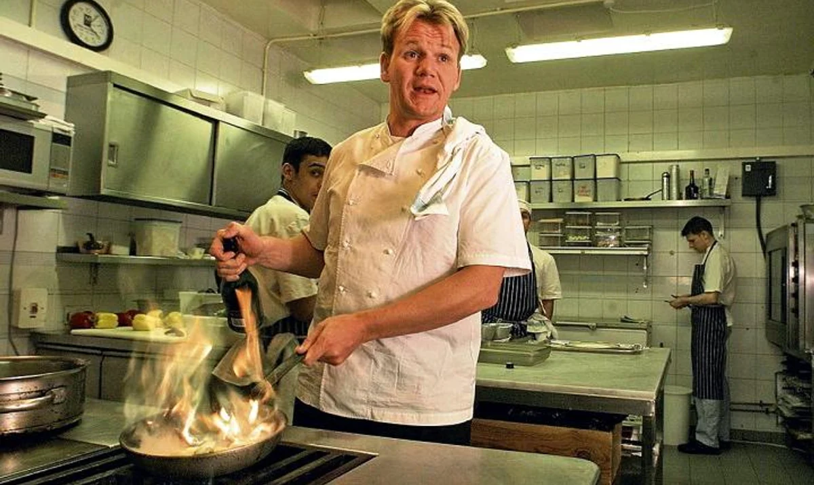

Znani kucharze
Polscy i zagraniczni mistrzowie kuchni to ludzie, którzy zainspirowali innych do tworzenia niezapomnianych, wyjątkowych potraw. Ich wyjątkowe umiejętności kulinarne są szczególnie cenione na całym świecie i wpływają na to, co jemy na co dzień. Wśród polskich mistrzów kuchni znajdują się takie sławy jak Magda Gessler, Paweł Oszczyk czy Wojciech Modest Amaro. Każde z nich wniósł swój wyjątkowy wkład w kuchnię polską. Magda Gessler jest znana z jej wyjątkowych restauracji i specjalnych potraw, które zawsze dostarczają niezapomnianych doświadczeń kulinarnych. Paweł Oszczyk jest za to szefem kuchni w najdroższych restauracjach w Polsce i znany jest z tworzenia potraw zgodnie z najnowszymi trendami kulinarnymi. Wojciech Modest Amaro jest jednym z najbardziej znanych szefów kuchni w Polsce. Jego szef kuchni, który skupia się na tradycyjnych polskich potrawach, zapewnia niezapomniane kulinarne przeżycia. Jeśli chodzi o zagranicznych mistrzów kuchni, to wśród nich są takie sławne nazwiska jak Gordon Ramsay, Jamie Oliver czy Heston Blumenthal. Gordon Ramsay jest znany z tworzenia wyjątkowych potraw i restauracji na całym świecie. Jamie Oliver jest znany z jego książek kucharskich i programów telewizyjnych, które pomagają ludziom uczyć się gotowania. Heston Blumenthal jest za to szefem kuchni w swojej słynnej restauracji The Fat Duck i tworzy niesamowite dania, które nie tylko są wyjątkowo smaczne, ale także ciekawie wyglądają. Dzięki ich pracy i zaangażowaniu, możemy cieszyć się niezapomnianymi kulinarnymi doświadczeniami.
 Gordon Ramsay w kuchni